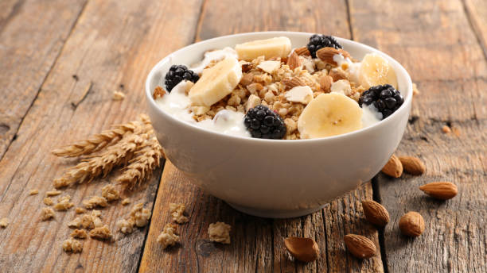

Oatmeal with Fruits Recipe

Ingredients:
- 1/2 cup rolled oats
- 1 cup milk or water
- 1 tbsp honey or maple syrup
- 1/2 tsp cinnamon
- 1/4 tsp vanilla extract
- 1/2 banana, sliced
- 1/4 cup mixed berries (strawberries, blueberries, raspberries)
- 1 tbsp chopped nuts (almonds, walnuts, or pecans)
- 1 tbsp chia seeds or flaxseeds
Instructions:
- In a small pot, bring milk or water to a gentle boil.
- Add rolled oats and reduce heat to low.
- Stir in cinnamon and vanilla extract.
- Cook for about 5 minutes, stirring occasionally until thick and creamy.
- Remove from heat and drizzle with honey or maple syrup.
- Top with sliced banana, mixed berries, nuts, and seeds.
- Serve warm and enjoy a nutritious start to your day!